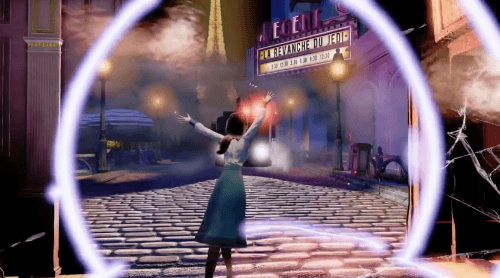

인피니트
평행우주론
평행우주론은?
우주가 하나가 아닌 한계가 없는 무한한 우주가 존재한다는 다중우주론을 기초로 하는 이론으로서,
우리의 존재 뿐만 아니라 모든 것이 다른 우주에 평행하게 똑같이 존재할 수 있다는 이론입니다. 즉 이 우주의 나 뿐만 아니라 다른 우주에 또 다른 내가 존재 할 수 있다는 이론입니다. 이는 '12 몽키스','더원', '나비효과','도니다코' 등 다영한 영화에서도 차용된 적있는 소재입니다.
슈뢰딩거의 고양이
이 평행우주이론을 설명하는데 가장 많이 사용되는 것이 바로 이 슈뢰딩거의 고양이 실험입니다. 밀폐된 상자속에 고양이 한 마리는 집어넣습니다. 이 상자 안에는 1시간에 50%확율로 알파입자가 방출되어 망치를 작동시키고, 이 망치는 청산가리가 들어있는 병을 깨뜨려 안에 있는 고양이를 죽이게 됩니다. 즉 1시간 후 청산가리로 고양이가 죽을 확율은 50/50이라는 것입니다. 1시간 후 상자를 열어보면 우리는 고양이가 어떻게 되어있는 지 알 수 있습니다. 고양이가 살아있을수도, 죽어있을 수도 있다는 것이지요. 문제는 1시간이 지난 상태에서 우리가 상자를 열어보지 않는 다면 - 즉 고양이의 상태를 '관찰'하지 않는 다면 고양이의 상태가 어떠한가가 문제입니다. 죽은 고양이의 상태는 분명 우리가 상자를 열어 '관찰'해서 얻어진 모습입니다. 즉 우리가 '관찰'이라는 행위를 통해서만 그 상태의 '결과'가 결정이 된다는 것입니다. 그렇기 때문에 만약 우리가 '관찰'을 하지 않는 상태로 놓는다면 고양이는 동시에 '죽어있기도 하면서 살아있기도' 한 상태가 된다는 것입니다.
상자 속에는 죽어있는 고양이와 살아있는 고양이가 동시에 공존하고 있다는 이론입니다. 이 이론은 다중 세계해석(many world interpretation)의 기초가 됩니다.
다른우주
중국인 무기제작자 린이 죽어있는 것을 발견한 부커와 앨리자베스는, 그 장소의 약간의 균열이 있는 것을 발견합니다. 앨리자베스는 그 균열을 열수 있는 힘을 가지고 있고, 그 균열을 열어 평행하는 다른 우주로 이동할 수 있는 능력을 깨닫게 됩니다. (이를 tear라고 칭합니다). 이들은 결국 린이 고문실에서 죽지 않은 평행하는 다른 우주로 이동하게 됩니다. 이 세계에는 린은 미국인 여자와 결혼을 한 상태였고, 부인이 콜롬비아의 영향력있는 사람들과 인맥이 있었기에 린이 무사히 풀려날 수 있었다는 것을 알게됩니다. 하지만 이 세상의 린의 상태를 보니 뭔가 잘못되어있다는 것을 알게됩니다. 평행하는 다른 세상에서 자신은 죽었는데 이 세상에서는 살아있으니, 그 두개의 상충되는 기억이 하나로 뭉쳐지면서 심각한 혼란을 겪게 되고 상징적으로 '코피'를 흘리게됩니다.

그리고 이 세계에서는 린이 잡혀가지는 않았지만, 무기제작에 사용되는 모든 기계들이 압류당했다는 것을 알게됩니다. 압류된 기계를 찾으러 경찰소에 간 부커와 앨리자베스는 기계를 찾긴하지만, 도저히 옮길수 있는 방법을 찾을수가 없고, 또다시 거기서 새로운 평형우주로 열리는 공간을 보게됩니다. 그 공간 압류실에 기계가 없는 것을 보고, 이는 벌써 기계가 다시 옮겨졌다는 것을 뜻한다 생각하고 그 평행우주로 이동하게 됩니다. '린을 살리기 위해' '린을 돕기 위해' '억압받는 노동자'들을 위해 선택했던 결정들은 하지만 예상할수 없는 결과를 초래했습니다. 무기를 얻은 이 세상은 Vox Populi의 폭동으로 찌들어있고, 이들은 무차별적으로 사람들을 죽이고 건물에 불을 지르기 시작합니다. 자신이 살렸다고 생각했던 린은 이 세상에서는 부인과 함께 잔인하게 살해당한 상태인 것도 발견합니다. 더욱 충격적인 사실은 이 세상에는 부커가 이미 죽었다는 것입니다. 음성 기록에 따르면 이 우주의 부커는 역시 똑같이 앨리자베스를 찾으러 콜롬비아에 옵니다. 하지만 유저가 플레이했던 부커인 경우는 기념관에서 앨리자베스를 구해냈던 반면, 이 우주의 부커인 경우는 기념관에 갔을 때 이미 기념관은 버러져있고 앨리자베스는 콤스탁 저택에 있다는 것을 알게됩니다. 결국 앨리자베스를 구하기위해서는 컴스탁을 무찔러야했고, 어쩌다보니 Vox Populi를 돕게된 것입니다. 하지만 혁명을 이끌던 도중 죽게되고 순교자로서 찬양받고 있는 것이였습니다. 부커는 또다른 자신이 죽은 이세계에 오자, '죽은 부커'의 기억과 '살아있는 부커'의 기억이 혼란이 와 정신을 차리지 못하고 코피를 흘리게됩니다.